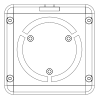
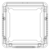
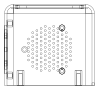
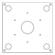
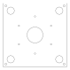

C-kocka – DXF előnézet
also_talca_(szan_alap)
also_talca_(szan_alap)_elol.dxf · 166 elem · 90.0 × 9.0
also_talca_(szan_alap)_felul.dxf · 121 elem · 90.0 × 90.0also_talca_(szan_alap)_metszet.dxf · 16 elem · 90.0 × 9.0also_talca_(szan_alap)_oldal.dxf · 154 elem · 90.0 × 9.0 andor_fa_betet
 andor_fa_betet_elol.dxf · 2 elem · 6.6 × 2.0andor_fa_betet_felul.dxf · 2 elem · 6.6 × 6.6andor_fa_betet_metszet.dxf · 1 elem · 6.6 × 2.0andor_fa_betet_oldal.dxf · 2 elem · 6.6 × 2.0
andor_fa_betet_elol.dxf · 2 elem · 6.6 × 2.0andor_fa_betet_felul.dxf · 2 elem · 6.6 × 6.6andor_fa_betet_metszet.dxf · 1 elem · 6.6 × 2.0andor_fa_betet_oldal.dxf · 2 elem · 6.6 × 2.0arc
arc_elol.dxf · 2 elem · 3.4 × 3.4 arc_felul.dxf · 2 elem · 3.4 × 0.3arc_metszet.dxf · 1 elem · 3.4 × 3.4
arc_felul.dxf · 2 elem · 3.4 × 0.3arc_metszet.dxf · 1 elem · 3.4 × 3.4 arc_oldal.dxf · 2 elem · 0.3 × 3.4
arc_oldal.dxf · 2 elem · 0.3 × 3.4 arc_2
 arc_2_elol.dxf · 2 elem · 3.4 × 3.4arc_2_felul.dxf · 2 elem · 3.4 × 0.3
arc_2_elol.dxf · 2 elem · 3.4 × 3.4arc_2_felul.dxf · 2 elem · 3.4 × 0.3 arc_2_metszet.dxf · 1 elem · 3.4 × 3.4arc_2_oldal.dxf · 2 elem · 0.3 × 3.4
arc_2_metszet.dxf · 1 elem · 3.4 × 3.4arc_2_oldal.dxf · 2 elem · 0.3 × 3.4arc_3
arc_3_elol.dxf · 2 elem · 15.0 × 5.7arc_3_felul.dxf · 6 elem · 15.0 × 0.3arc_3_metszet.dxf · 1 elem · 15.0 × 5.7arc_3_oldal.dxf · 8 elem · 0.3 × 5.7
c_fenycsatorna
c_fenycsatorna_elol.dxf · 2 elem · 44.0 × 47.9c_fenycsatorna_felul.dxf · 8 elem · 44.0 × 3.0c_fenycsatorna_metszet.dxf · 1 elem · 44.0 × 47.9c_fenycsatorna_oldal.dxf · 12 elem · 3.0 × 48.2
erinto_betet
erinto_betet_elol.dxf · 2 elem · 17.8 × 2.0erinto_betet_felul.dxf · 2 elem · 17.8 × 17.8erinto_betet_metszet.dxf · 1 elem · 17.8 × 2.0 erinto_betet_oldal.dxf · 2 elem · 17.8 × 2.0
erinto_betet_oldal.dxf · 2 elem · 17.8 × 2.0 gomb_1
gomb_1_elol.dxf · 8 elem · 9.6 × 8.6gomb_1_felul.dxf · 8 elem · 9.6 × 9.6gomb_1_metszet.dxf · 1 elem · 9.6 × 8.6gomb_1_oldal.dxf · 8 elem · 9.6 × 8.6
gomb_2
gomb_2_elol.dxf · 6 elem · 9.6 × 8.6gomb_2_felul.dxf · 6 elem · 9.6 × 9.6gomb_2_metszet.dxf · 1 elem · 9.6 × 8.6 gomb_2_oldal.dxf · 6 elem · 9.6 × 8.6
gomb_2_oldal.dxf · 6 elem · 9.6 × 8.6 gomb_3
 gomb_3_elol.dxf · 6 elem · 9.6 × 8.6
gomb_3_elol.dxf · 6 elem · 9.6 × 8.6 gomb_3_felul.dxf · 6 elem · 9.6 × 9.6
gomb_3_felul.dxf · 6 elem · 9.6 × 9.6 gomb_3_metszet.dxf · 1 elem · 9.6 × 8.6
gomb_3_metszet.dxf · 1 elem · 9.6 × 8.6 gomb_3_oldal.dxf · 6 elem · 9.6 × 8.6
gomb_3_oldal.dxf · 6 elem · 9.6 × 8.6gomb_4
gomb_4_elol.dxf · 6 elem · 9.6 × 8.6gomb_4_felul.dxf · 6 elem · 9.6 × 9.6gomb_4_metszet.dxf · 1 elem · 9.6 × 8.6gomb_4_oldal.dxf · 6 elem · 9.6 × 8.6
gumi_sarok_1
gumi_sarok_1_elol.dxf · 8 elem · 14.2 × 14.2gumi_sarok_1_felul.dxf · 11 elem · 14.2 × 14.2gumi_sarok_1_metszet.dxf · 1 elem · 15.1 × 15.1gumi_sarok_1_oldal.dxf · 10 elem · 18.2 × 18.2
gumi_sarok_2
gumi_sarok_2_elol.dxf · 12 elem · 18.2 × 19.5gumi_sarok_2_felul.dxf · 9 elem · 18.5 × 18.5gumi_sarok_2_metszet.dxf · 1 elem · 15.1 × 15.1gumi_sarok_2_oldal.dxf · 13 elem · 18.2 × 19.5
gumi_sarok_3
gumi_sarok_3_elol.dxf · 10 elem · 14.2 × 14.2gumi_sarok_3_felul.dxf · 10 elem · 18.2 × 18.2gumi_sarok_3_metszet.dxf · 1 elem · 15.1 × 15.1gumi_sarok_3_oldal.dxf · 10 elem · 18.2 × 18.2
gumi_sarok_4
gumi_sarok_4_elol.dxf · 13 elem · 18.2 × 19.5gumi_sarok_4_felul.dxf · 11 elem · 18.2 × 18.2gumi_sarok_4_metszet.dxf · 1 elem · 15.1 × 15.1gumi_sarok_4_oldal.dxf · 11 elem · 18.2 × 19.5
gumi_sarok_5
gumi_sarok_5_elol.dxf · 8 elem · 14.2 × 14.2gumi_sarok_5_felul.dxf · 10 elem · 18.2 × 18.2gumi_sarok_5_metszet.dxf · 1 elem · 15.1 × 15.1gumi_sarok_5_oldal.dxf · 11 elem · 14.2 × 14.2
gumi_sarok_6
gumi_sarok_6_elol.dxf · 13 elem · 18.2 × 19.5gumi_sarok_6_felul.dxf · 9 elem · 18.5 × 18.5gumi_sarok_6_metszet.dxf · 1 elem · 15.1 × 15.1gumi_sarok_6_oldal.dxf · 12 elem · 18.2 × 19.5
gumi_sarok_7
gumi_sarok_7_elol.dxf · 10 elem · 14.2 × 14.2gumi_sarok_7_felul.dxf · 10 elem · 18.2 × 18.2gumi_sarok_7_metszet.dxf · 1 elem · 15.1 × 15.1gumi_sarok_7_oldal.dxf · 10 elem · 18.2 × 18.2
gumi_sarok_8
gumi_sarok_8_elol.dxf · 14 elem · 18.2 × 19.5gumi_sarok_8_felul.dxf · 11 elem · 18.2 × 18.2gumi_sarok_8_metszet.dxf · 1 elem · 15.1 × 15.1gumi_sarok_8_oldal.dxf · 8 elem · 18.2 × 19.5
haz_(sls)
haz_(sls)_elol.dxf · 591 elem · 90.0 × 81.0
haz_(sls)_felul.dxf · 280 elem · 90.0 × 90.0haz_(sls)_metszet.dxf · 108 elem · 90.0 × 81.0
haz_(sls)_oldal.dxf · 344 elem · 90.0 × 81.0 kamera
kamera_elol.dxf · 2 elem · 4.4 × 4.4kamera_felul.dxf · 2 elem · 4.4 × 1.6kamera_metszet.dxf · 1 elem · 4.4 × 4.4kamera_oldal.dxf · 2 elem · 1.6 × 4.4
rgb_fenygyuru
rgb_fenygyuru_elol.dxf · 11 elem · 66.0 × 3.0rgb_fenygyuru_felul.dxf · 11 elem · 66.0 × 66.0rgb_fenygyuru_metszet.dxf · 1 elem · 66.0 × 3.0rgb_fenygyuru_oldal.dxf · 8 elem · 66.0 × 3.0
tetolap
tetolap_elol.dxf · 34 elem · 72.0 × 2.0
tetolap_felul.dxf · 19 elem · 72.0 × 72.0tetolap_metszet.dxf · 8 elem · 72.0 × 2.0tetolap_oldal.dxf · 74 elem · 72.0 × 2.0 vagas
Andor_fabetet_fa_2mm.dxf · 1 elem · 6.6 × 6.6C_fenycsatorna_opal_akril_3mm.dxf · 1 elem · 44.0 × 47.9erintobetet_opal_akril_2mm.dxf · 1 elem · 17.8 × 17.8fenygyuru_diffuzor_opal_akril_3mm.dxf · 4 elem · 66.0 × 66.0
tetolap_alu_2mm.dxf · 16 elem · 72.0 × 72.0